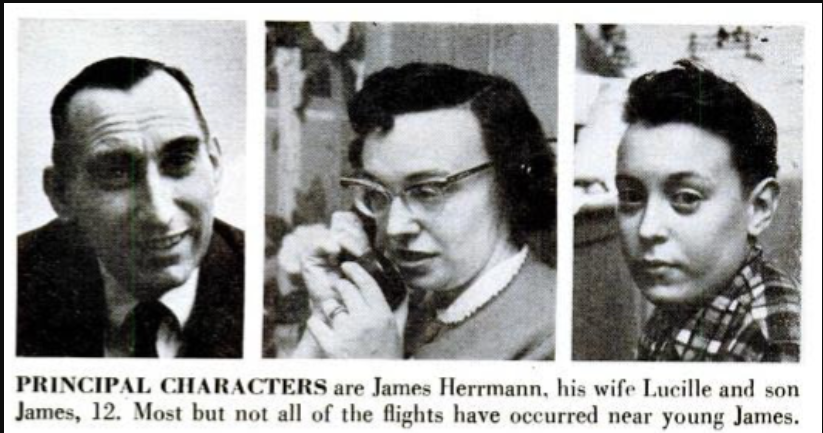
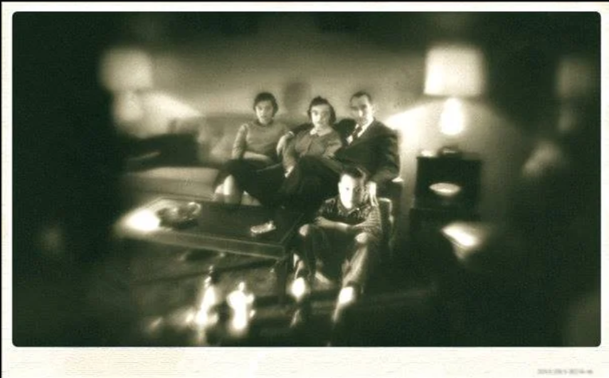

| Welcome Page | Poltergeists |
| Jersey Devil | The Hat Man |
In February 1958, the Herrmann family of Seaford, Long Island, became the center of a famous poltergeist case, with the unseen culprit nicknamed "Popper."
How it began: On February 3, right when the two Herrmann children (Lucille, 13, and James "Jimmy," 12) got home from school, bottles all over the house
popped their screw-top caps and spilled their contents, including bleach, starch, shampoo, and holy water. The family shrugged it off at first, but it
kept happening. Mr. Herrmann suspected a chemical reaction, then suspected Jimmy of pranking the family, but he couldn't catch his son doing anything.
Escalation: After Herrmann saw bottles slide across the bathroom sink on their own, he called the police. An officer who arrived skeptical had bottle
caps fired in his direction, and Detective Joseph Tozzi took over the case. Activity grew beyond bottles: figurines flew across rooms, a heavy bronze
horse statue hit Tozzi in the legs, and bookcases toppled. Father William McLeod blessed the house with holy water, but it made no difference.
The investigation: The case drew huge media attention (including Time and Life), along with reporters, cranks, and self-proclaimed holy men. Tozzi tested
many explanations: sonic booms, radio waves, underground streams, vibrations, structural problems, wells, and even a chimney downdraft. None held up.
Researchers from J.B. Rhine's parapsychology lab at Duke, Dr. J. Gaither Pratt and William Roll, arrived on February 26. They believed someone in the
household, possibly Jimmy, might be unconsciously causing the events through psychokinesis, since Tozzi's notes had Jimmy near the disturbances over 75
percent of the time. Still, Tozzi had cleared him of deliberate trickery, and the researchers judged the family too shaken for a hoax.
The end: The activity quieted down, flared up again in early March, and stopped for good on March 10 with one last popped bleach bottle. In total,
67 disturbances were recorded in just over a month. Even months later, no one, including the Duke scientists, could offer a satisfactory explanation,
and Mrs. Herrmann said she believed there was "a definite physical force" behind it. The case remains unexplained, and it was notable as the first haunting shown on television.

"The Herrmanns reported several other occurrences of glass bowls flying and upended bookcases, witnessed by the whole family. And then, one month and eight days after the initial “popping,” the poltergeist would pop one last bottle of bleach in the basement—a phenomenon witnessed by Doctors Pratt and Roll—and remained inexplicably silent ever since."
—Catie Moyer, Horror Geek Life

"In February 1958, strange things were happening on Long Island. A house belonging to a family named Herrmann was being beset by strange and inexplicable incidents that were attributed to a ghost who was dubbed “Popper”".
—Anonymous, American Hauntings Ink